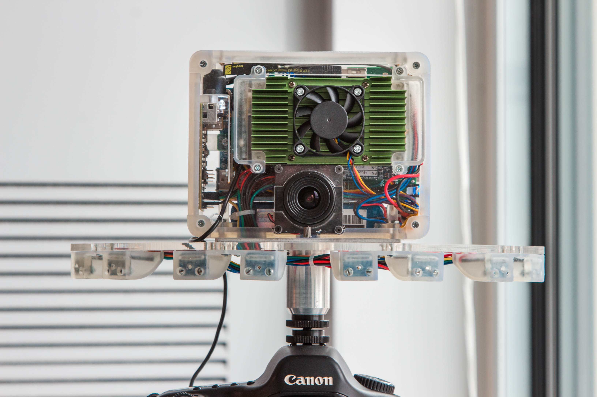
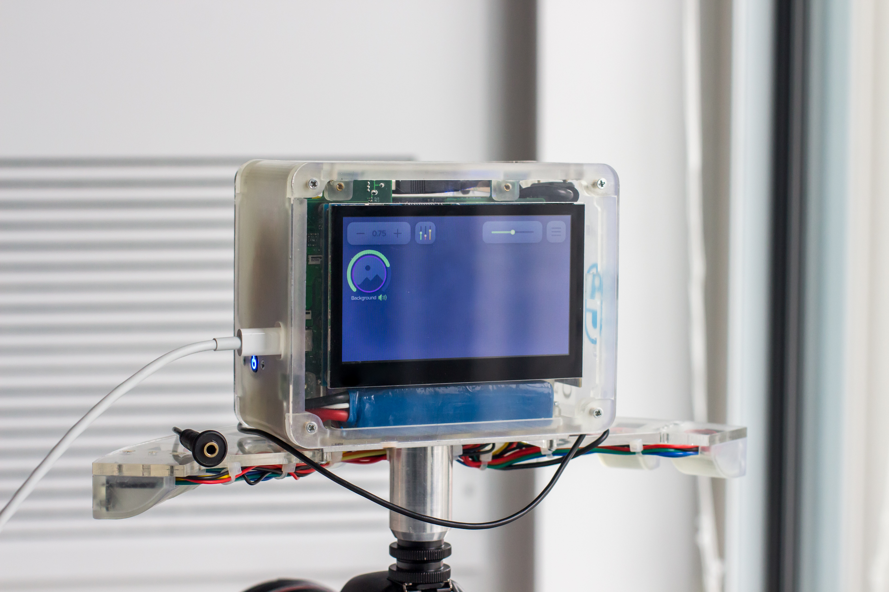
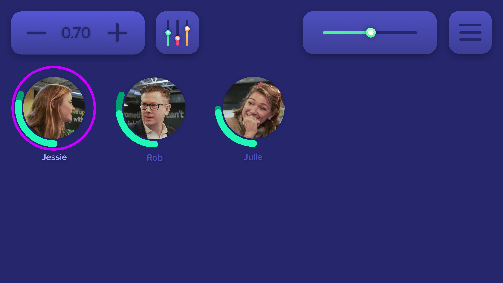

The Problem
Sonicam was created to meet the needs of modern content creators who are looking to capture high quality audio to accompany high quality video. This is a challenge that currently requires a dedicated crew with expensive equipment. Sonicam is a microphone attachment that mounts to the hot shoe mount of modern DSLR cameras.
The device is equipped with a camera that allows audio sources within a scene to be identified. An 8 microphone array is used to capture audio from the desired audio source. An intuitive touch screen user interface make Sonicam easy to use. All the user needs to do is plug the 3.5mm stereo output into their camera to begin recording audio.
The Rear of Sonicam
The Front of Sonicam
The Team
I worked on Sonicam along with 4 other people. Eric Y. worked on the audio algorithms, Alex B. worked on the electrical hardware, and Cole M. worked on the mechanical hardware and Michael S. worked on the video processing. I worked on the front-end user interface.
Research
Current Solutions
We started our research by looking what features audio engineers use currently. For instance, Current market solutions for recording audio are boom/shotgun microphones and lapel mics. These solutions have their benefits and drawbacks. Boom and shotgun microphones are good at reducing background noise in the environment, as they record sound in the direction that they are pointing. This makes it necessary to have someone to control the microphone if the source of sound is moving. On the other hand, lapel microphones clip onto a shirt collar to record a person’s individual sound. This takes a longer time to setup and is visible if not properly hidden. Thus, Sonicams main goal would be easy to use such that it provides a real advantage over the competing audio solutions; with secondary goals being the combination of the benefits from the existing solutions. Thus, Sub-goals include the ability to: separate the sound coming from individual people, adjust the amount of background noise, and decrease the time it takes to record and edit the audio portion of a video. Overall, This makes having an easy to use interface imperative for the product to also be easy to use.
The Design
Flow
Using Sonicam to record video is as follows: when faces are in view of the camera, they can be added into the interface becoming a tracked POI (Person of Interest). A tracked POI enables the audio coming from them to be recorded. The POI audio is modifiable, allowing users to tweak volume and equalizer settings.
Features
As a team, we came up with a list of use cases and features for the product.
POI (Person of Interest) information:- POI Video Feed
- Volume level
- Name
- Change POI volume
- Change master volume
- Open Settings
- Open Equalizer
- Select POI for modification
- Add POIs to interface
- Remove POIs from interface
Development Time
We were very restricted on the amount of development time. Once the design was finished, there was 1 month to complete development before the showcase symposium. Because of the time restraints on Sonicam, the interface design had to be quick to implement.
Intuitive to Users
New users who are given Sonicam and a description of the product should be able to figure out how to get around the interface to perform what they want to do. Steve Krug in the book Don't Make Me Think, Revisited: A Common Sense Approach to Web Usability says that this can be tested by giving the a user the layout of the interface and a task and seeing if they know what to do with minimal questions. The less questions they ask, and the faster they complete tasks, the more intuitive the interface. I gave potential users questions/tasks like:
- Add a new POI to be tracked
- Remove a POI
- Select a POI
- What did you like about the interface?
- What did you dislike about the interface?
- What did you find most confusing?
Potential Solutions
Using the features above, many different interfaces were wireframed. We noticed that each interface could have one of 3 possible themes. There was face centric (faces are the main focus), scene centric, and a combination centric interface.
To make the comparisons between the interfaces more controlled, they should have as few changes as possible between them except for the interface focus. The common elements between each interface are the following:

From left to right: change POI volume multiplier, open POI equalizer settings, change master volume, open settings.
Scene Centric

A mockup of the scene centric interface
In this interface, selected POIs are denoted by a duplicate of the POI in the bottom left corner beside the user controls. Selecting a POI can be done by clicking inside their volume ring. Adding a POI is possible by clicking on a face in the scene. Added POIs are designated by the volume ring that surround the tracked person’s face. To remove a POI the user can hold the existing POI and the option to remove the link will appear.
When interviewing users, they said it felt very intuitive. Hardly any questions were raised on how to use this interface. People could easily figure out that to add a POI to the interface they just need to click on a face that has not been added yet. Although some said that it would be distracting to have the expected position of the POIs move around with the scene, others liked that each POI would be in the same place as the scene. Users were slightly confused about what POI was selected. There was also some confusion when adding a new POI because there was no indication that an untracked POI was picked up by the face detection and could be added.
Face Centric
A mockup of the face centric interface
In this solution, selected POIs are denoted by a lighter name colour and a magenta ring around the video feed. Selecting a POI for modification can be done by tapping on one. To add a POI, the user can hold any empty space in the interface that brings up a window showing faces that have not been added in yet; clicking on one of the faces adds the POI to the interface. To remove a POI, the user can hold an existing POI and the option to remove appears.
When interviewing users to see what they had to say about this solution, the majority knew their way around it. Only a few were confused with adding POIs, but the focus of the interface was well interpreted. These areas of confusion can be cleared up by including a short tutorial of the interface when it is first used. Users reported that they liked how the interface presented only the POI video feeds; they said that it made the interface feel much simpler. People said that it was confusing to tell what the volume range of the POI was, as there is no indication of what maximum volume is. Users also said that the POI selection ring looked out of place.
Combination Centric

A mockup of the combination of the face and scene centric interface
Here, POIs are arranged on the bottom of the interface. Selecting a POI can be done by either tapping a face in the scene or the POI at the bottom. Selected POIs are denoted by the magenta ring and a lighter name colour. To add a POI, the user can click on an untracked face in the scene, causing the POI to appear at the bottom and a purple ring to surround the POI in the scene. To remove a POI, an existing POI can be held and the option to remove appears. The control elements were shifted to the left and rotated 90˚ where there was room to put them so that they weren’t floating on top of the video feed and covering up any faces.
When users were given this interface for testing, many were not sure where to start. It took users more time to scan over the interface and figure out how what was going on. Once users were used to the layout, they found it worked just as well as the other two interfaces.
The problem with this interface is that it lacks a general focus. When users first encounter it, they do not know what to look at and interact with. The added complexity does not help in real life use cases where people want to record quickly and easily.
Chosen Solution
After testing, it was concluded that the interface must contain a singular focus to be easy to use. This rules out the combination interface. The scene centric interface received some feedback that it was annoying to have the POIs move location with the scene. They prefered the face centric interface where they would stay in the same expected location. Therefore, we chose a slightly modified face centric interface, incorporating the feedback received during testing.

The face centric interface after incorperating user feedback
In this version, the POI volume indicator has a background to indicate the maximum volume for each POI. The POI selected indicator was also modified to be less out of place.
The following is a demonstration of the interface in use with a pre-recorded video/audio source
Demonstration of the interface with audio
Development
The development of the interface was done in ReactJS. Source code for the front-end is here if that is of interest.
Challenges
POI Volume Control Element
One of the biggest challenges was deciding how to implement the POI volume control element. It needed to be precise so that a specific volume multiplier could be dialed in, but also fast to modify. We brainstormed to go with a selector like the one below but rotated 90˚. This would have allowed quick and precise modifications to the POI volume

iOS date picker
But due to time restraints, I went with 2 buttons for increasing and decreasing the volume, and the ability to hold them to change volume faster.
Optimising Performance
When testing the interface, I noticed that it would consume a lot of CPU resources. This works alright when the interface is the only process running, but in real use there will be audio and video processing happening concurrently.
In react, every change to a component’s props or state will cause it to update/re-render. Some of these updates can be unnecessary and waste CPU resources. To mitigate some of these re-renders, I profiled the react app using the react developer tools Chrome extension. This allowed me to see what components were updating at a given time, and how much time it took them to update. I used this to define the components that update unnecessarily. To make them update only when needed, I made some of them inherit React.PureComponent (which performs a shallow props/state comparison, and updates when something changed) and for the others I wrote shouldComponentUpdate which I used to compare the props + state and return true when the component should update.
Improvements
I think the UI could use some improvements to make it easier to read. POI names could have more contrast with the background. And the selected POI could be more obvious.
I wish I had interviewed potential customers for Sonicam (ex: vloggers, content creators, people that use the existing solutions), as that would have gave me more insight into the problems of current solutions and what features they would want to in this product.
Conclusion
Overall I learned:- about the design process, specifically what goes into making a intuitive design
- how to make sacrifices to a design in order to get it completed within deadlines
- How to incorporate development limitations when designing
- How to develop a web app in ReactJS
- How to integrate a web app with a backend using HTTP requests and websockets